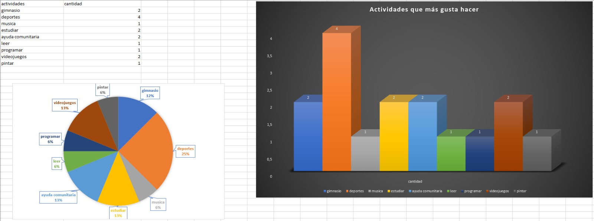
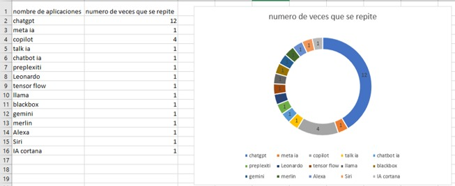

vimos que datos se repetían y buscamos graficar de cierto que nos brindara dicha información en una grafica de pastel
Se agruparon las actividades que eran similares y se contaron manualmente

Elegimos la columna número 5
y sacamos las palabras repetidas con la ayuda de chatGPT y las rectificamos manualmente e hicimos lo mismo con las palabras únicas (que no se repetían) Luego último hicimos la suma de las palabras repetidas y también sacamos el número de palabras únicas y por último hicimos un gráfico circular 3D con los números de las palabras repetidas
de manera manual tome los nombres de ias distintas y luego conté cuantas veces se repetía cada una, para al final juntar los valores y generar un anillo con Excel donde podemos ver que lo que vas se repite es chatgpt

yo utilice excel con formulas para sacar las palabras que estaban repetidas separando el texto y luego contando las palabras mas importantes de las inteligencias artificiales utilizando esta formula para contar las palabras que se repiten, SUMA(SI(NO(ESERROR(BUSCAR("chat"; A25:AY41)));1;0))+SUMA(SI(NO(ESERROR(BUSCAR("chat gpt"; A25:AY41)));1;0))
SE REALIZO UTILIZANDO FORMULA DE EXCEL Y TABLAS DINAMICAS.
1 de 487
David Sarria- Valentina Montealegre: Nos dimos cuenta que hay varias coincidencias y todas apuntan hacia el hecho de que todos contamos con habilidades blandas suficientes y exactas para llevar a cabo un excelente trabajo en equipo.
basicamente lo que hicimos fue indentificar, contar las palabras y finalmente estructuramos los resultados en una tabla de conteo que permite ver rápidamente la
frecuencia de cada palabra y proporciona una vision general de los temas mas mencionados. los cuales son la inseguridad, contaminación y transporte
Aprendizaje clase 22 de agosto
Hoy aprendimos la definicion de la IA, hablamos sobre grafos y la maquina de Turing, miramos una comparacion de un juego de ajedrez entre un humano y una computadora
Aprendizaje clase 29 de agosto
REDES NEURONALES
Hoy miramos redes neuronales recordando matrices, en redes neuronales Se componen de capas de nodos,
que contienen una capa de entrada, una o más capas ocultas y una capa de salida. Cada nodo se conecta a otro y tiene un peso y un umbral asociados.
Las redes neuronales convolucionales constan de varias capas y cada una de ellas percibe pequeñas partes de una imagen.
La red neuronal aprende sobre las características visuales de cada clase de imágenes y eventualmente aprende a reconocerlas
Aprendizaje clase 12 de septiembre
REDES NEURONALES
s
Hoy usando google colab miramos e hicimos el codigo para el entrenamiento y la evaluación de un modelo de red neuronal para la conversión de temperaturas entre grados Celsius y Fahrenheit.
Primero, definimos los datos de temperatura en Celsius y sus valores correspondientes en Fahrenheit. Luego, construimos y entrenamos un modelo simple de red neuronal con una sola capa densa durante 1000
, utilizando el error cuadrático medio como función de pérdida. Después del entrenamiento, visualizamos la pérdida del modelo, realizamos una predicción para 100 grados Celsius y revisamos los pesos internos del modelo. Finalmente,
definimos un modelo de red neuronal más complejo con dos capas ocultas para explorar la posibilidad de mejorar el rendimiento.